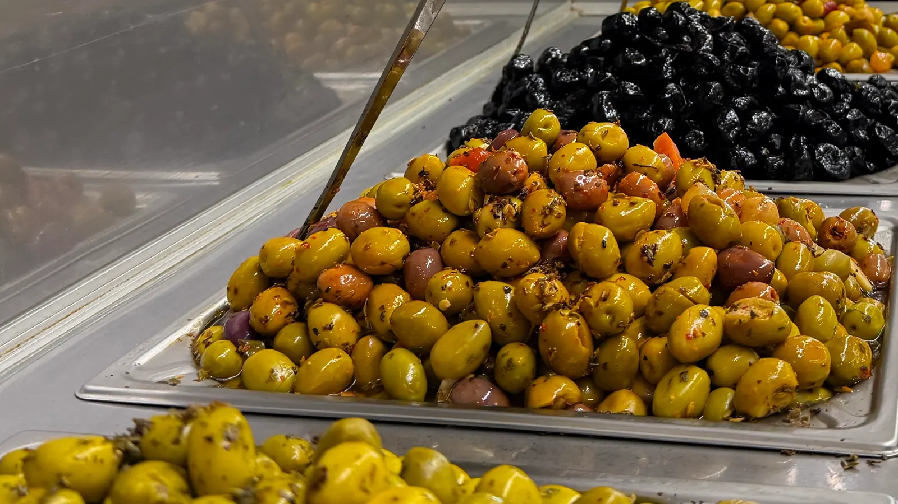
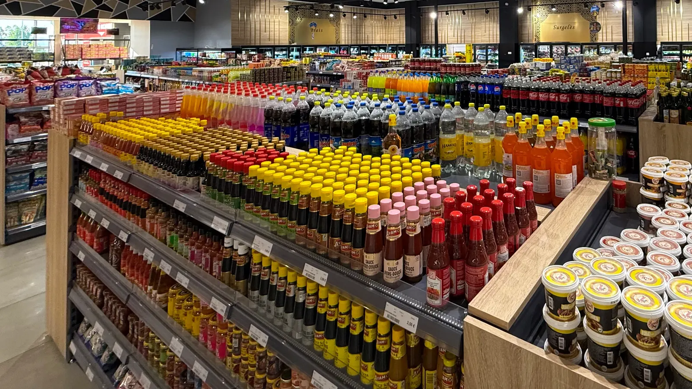

Fruits de saison
Fruits de saison

Agrumes, fruits rouges, melons, fruits exotiques.

Primeur · Manosque
Fruits, légumes, herbes fraîches et olives : Délice Primeur, c'est le marché de Manosque ouvert 7 jours sur 7, du lever au coucher du soleil.
Ouvert 7j/7 · 6h – 21h
Délice Primeur · Manosque
Délice Primeur sélectionne chaque matin fruits et légumes de saison, herbes fraîches et produits du marché, pour vous les proposer à prix justes, toute la journée.
Coriandre, menthe, persil plat en bottes généreuses, tomates charnues, poivrons, agrumes et fruits exotiques : tout ce qu'il faut pour cuisiner simple, sain et savoureux.
Dans la boutique
Sélectionnés chaque matin, présentés comme au marché, à prix justes.
Fruits de saison
Agrumes, fruits rouges, melons, fruits exotiques.

Tomates, poivrons, courgettes, aubergines.
Herbes & aromates
Coriandre, menthe, persil, aneth en bottes.

Au détail, comme au souk.
Au comptoir
Faites glisser la vitrine pour tout voir. Prix affichés en boutique.
Poivrons tricoloresArrivage du jour
Rouges, jaunes, verts : à griller ou farcir.
Légumes vertsArrivage du jour
Oignons nouveaux, poireaux, blettes, salades.
Corbeille de fruitsSélection du marché
Agrumes, pommes, bananes, fruits de saison.
Fruits exotiquesSélection du marché
Mangues, ananas, avocats mûrs à point.
Bottes d'herbes fraîchesChaque matin
Coriandre, persil plat, menthe, aneth.

Huiles & condimentsÉpicerie Pour assaisonner vos légumes du marché.En images
Visuels provisoires (rayon primeur Délice Market) — à remplacer par des photos de la boutique.
Nous trouver
327 Av. Frédéric Mistral, 04100 Manosque
Ouvert 7 jours sur 7, de 6h à 21h
Ouvert 7j/7 · 6h – 21h
La famille Délice
 Entrer
Supermarché · Manosque
Délice Market
544 Av. Frédéric Mistral, 04100 Manosque
Ouvert 7j/7 · 8h30 – 21h
Entrer
Nouveau
Supermarché · Gap
Délice Market
Rue des Mimosas, ZAC de Fontreyne, 05000 Gap
Ouvert 7j/7 · 8h30 – 21h
Entrer
Supermarché · Manosque
Délice Market
544 Av. Frédéric Mistral, 04100 Manosque
Ouvert 7j/7 · 8h30 – 21h
Entrer
Nouveau
Supermarché · Gap
Délice Market
Rue des Mimosas, ZAC de Fontreyne, 05000 Gap
Ouvert 7j/7 · 8h30 – 21h
 Entrer
Boucherie · Manosque
Boucherie Délice
14 bis Av. du Majoral Raoul Arnaud, 04100 Manosque
Ouvert 7j/7 · 8h – 19h
Entrer
Boucherie · Manosque
Boucherie Délice
14 bis Av. du Majoral Raoul Arnaud, 04100 Manosque
Ouvert 7j/7 · 8h – 19h
 Entrer
Boucherie · Digne-les-Bains
Délice Boucherie
7 Rue André Honnorat, 04000 Digne-les-Bains
Ouvert 7j/7 · 8h30 – 19h
Entrer
Boucherie · Digne-les-Bains
Délice Boucherie
7 Rue André Honnorat, 04000 Digne-les-Bains
Ouvert 7j/7 · 8h30 – 19h